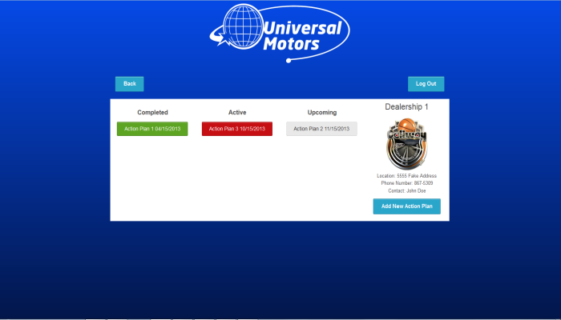

-

- 
-

-

Dealership consultant mobile application
Currently, Urban Science has a need to create an application that will support our consultant’s
discussions with dealers to improve dealer financial performance. The consultants need certain
information as they meet with dealers to assist in dialog through key data and facts. The reporting
aspect is a precursor to the discussion that the consultant has with the dealer. During the visit with the
dealership, there is a need to accumulate information about the experience/interaction. Several items
will be collected and stored through the application.
• Specific action plan that the consultant will be speaking to the dealer about
• What the dealer’s reaction is to the recommendations
• What the atmosphere is during the discussion with the dealer
• What specific process is going to be utilized to generate improvements/meet objectives
• What the dealer agrees to do to generate improvements
This data will be utilized for further analysis and, therefore, must be logically stored back into in a
database for analysis.